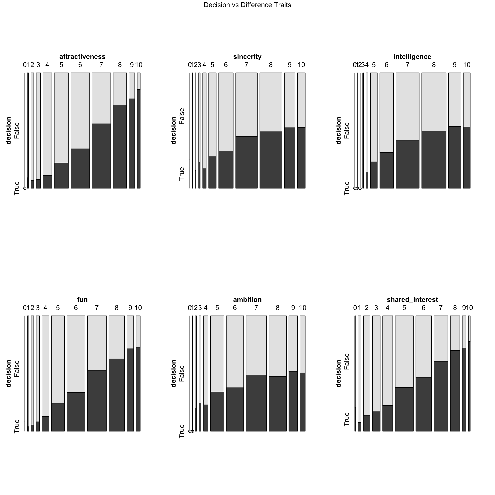

Chapter 4 Missing values
4.1 Missing Value Pattern Analysis: Whole Dataset
In this section, we will visualize and analyze the missing values in the datasets. The dataset we use contains two part: one part are variables documented by the event, and the rest of the data came from survey results filled out voluntarily by the participants of the speed dating events. In order to analyze the missing value trend, we are first going to generate a histogram of the percentage of missing value of each variable, which hopefully will give us some insight for the investigation of the dataset.
Below, we calculate the missing value percentage by dividing the number of the null values by the total number of entries in each column.
We would plot the missing datta percentage with a histogram below:
From the histogram above, we can observe that variables like id, iid, wave number, and matching results which are data documented by the event have no missing values. Variables like race, career, and zipcode, and gender also contain no missing values. However, variables involving the evaluation of partners during the event, for example, fun and sinc (sincerity) have missing value exceeding 50%. It will be interesting to look into the reason behind the high missing percentage of those variables. For instance, different waves of the participants were asked to fill out different evaluative questions, and hence variables related to evaluation contain a large portion of missing values.
4.2 Missing Value Pattern Analysis: Subset of Variables
Based on the questions we want to investigate, we select 15 variables among the 195 variables from the dataset. Below, we plot the missing value pattern for these 15 variables:

From the plots above, we can observe that Variables such as field, gender, income, match, and decision after the meeting have no missing values. We can observe that in the dataset, variables age, a1_1(importance of attractiveness), goal, impr (importance of same race) are often missing together. We need to further investigate the high missing value percentage of met (if youm met your partner before), and the result might give us some interesting fact about the dataset.
Answer following questions: Are all there row patterns to the missing values? Are certain ranges more likely to be missing?